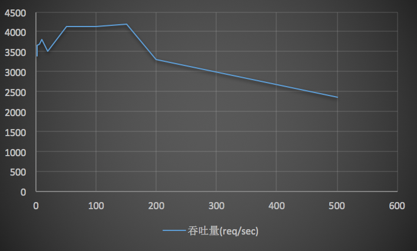
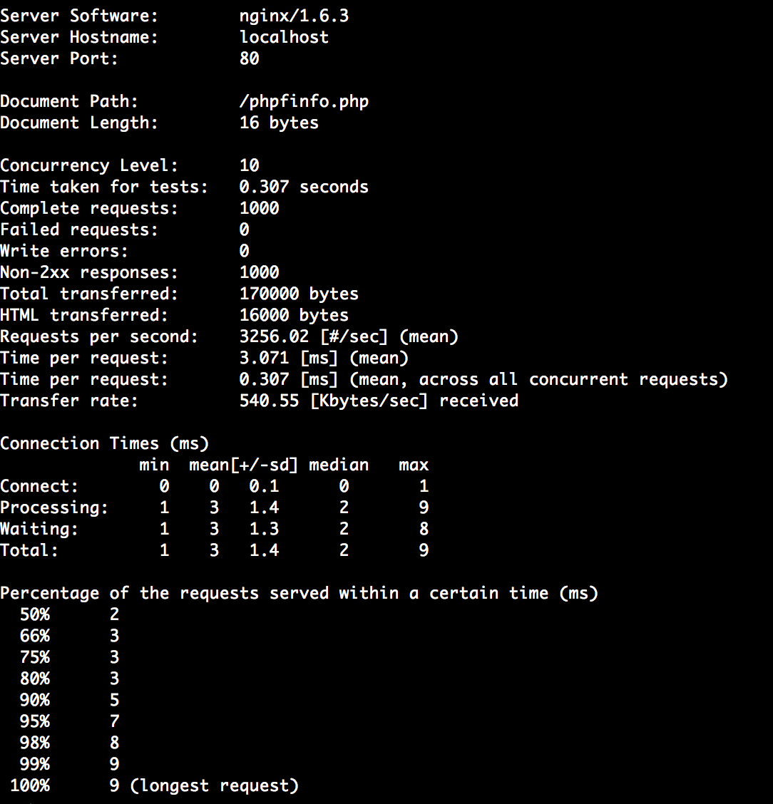

通常考察服务器性能都离不开高并发、高吞吐率，本文主要描述了一些基本的概念，并通过ab压测分析其中的影响因素。
吞吐率
对于web服务器的并发处理能力，一般都用吞吐率来表示（req/s），即单位时间内服务器处理的请求数。
而我们说明服务器性能的重要指标就是最大吞吐率，表示在单位时间内该服务器能处理的最大请求数。
但是实际中，服务器的最大吞吐量是跟业务相关的，线上环境我们也很难模拟，准确算出一台服务器的最大吞吐量。影响因素主要有：
- 并发用户数：如果并发用户数大于服务器所能支撑的最大并发数，那肯定会对服务器性能造成影响
- 总请求数：即总共向服务器发送多少个请求，该值大于等于并发用户数，每个用户可以发送多个请求。
- 请求资源类型：静态、动态内容， 文本、图片内容等都是影响吞吐量的直接因素
- 服务器硬件：服务器本身硬件条件，包括内存容量、CPU核心、是否缓存等
- 服务器软件：服务器用的Apache、Nginx等软件也是至关重要的因素
以上影响因素中，并发用户数、总请求数是不可控的，作为压力测试的主要变量；而后续几项则是服务器压测对象的描述。
并发用户数
并发用户数是指某一时刻同时向服务器发送请求的用户数量, 这里的同时意味着同一时间的发送。注意：真是的用户可能会给服务器带来多个并发用户数(浏览器下载一个网页可能采用多线程的并发下载)。
请求等待时间
- 用户平均等待时间：单个用户的质量体验
- 服务器平均请求处理时间：服务器的质量体验（吞吐量的倒数）
所以一般分析、提高服务器的并发处理能力，都是*固定某些方面因素，单独考察某一因素。并没有提高服务器并发能力的通用策略*。
ab压力测试

参数说明
其中，一些重要的参数说明如下：
- -n: 表示总请求数为1000
- -c 10: 表示并发用户数为10
- http://localhost/phpinfo.php: 表示压测的目标URL
- Concurrency Level: 表示并发用户数
- Time taken for tests: 表示所有这些请求被处理完的总时间
- Complete requests: 表示总请求数
- Failed requests: 表示失败的请求数
- Total transferred: 表示所有请求响应数据长度总和（响应头+正文数据长度）
- HTML transferred: 表示所有请求响应的正文长度总和（正文数据长度）
Request per second: 吞吐量， 等于 [ Complete requests / Time taken for tests ]Time per request: 用户平均等待时间, 等于 [ Time taken for tests /（Complete requests / Cocurrency Level）]Time per request(accross all concurrent requests): 服务器平均请求处理时间, 等于吞吐量的倒数。 同时也等于 [ Time per request / Cocurrency Level ]- Transfer rate: 表示这些请求在单位时间内从服务器获取的数据长度，等于 [ Total transferred / Time taken for tests ]
- Percentage of the requests served within a certain time(ms): 每个请求处理时间的分布情况（指的是Time per request）
注意： 参数Failed Requests表示连接请求发生异常，或者相应超时的情况（对于返回2XX以外的状态码，将显示另一个名为“Non-2xx responses”的统计项，返回状态码的不算请求失败), 上述截图中，在Failed requests下面出现了统计失败的原因，分别有Connect、Receive、Length、Exceptions
- Connect 无法送出要求、目标主机连接失败、要求的过程中被中断。
- Receive 服务器接受连接异常。
- Length 响应的内容长度不一致 ( 以 Content-Length 头值为判断依据 )。
- Exception 发生无法预期的错误。
这里的Length是以“第一次”响应取得的Content-Length为主，如果后续的HTTP Request所得到的HTTP 响应头的Content-Length与第一次的不一致，就会得到Length的错误。 这个对于动态页面来说正常。
不同并发数的测试对比
不同压测基于Nginx，请求总数为10000，不同并发数的测试结果如下表：
| 用户并发数 | 吞吐量(req/sec) | 用户请求等待时间(s） | 服务器请求处理时间(s) |
|---|---|---|---|
| 1 | 3383.05 | 0.295 | 0.295 |
| 2 | 3647.08 | 0.548 | 0.274 |
| 5 | 3690.62 | 1.355 | 0.271 |
| 10 | 3815.39 | 2.621 | 0.262 |
| 20 | 3497.34 | 5.719 | 0.286 |
| 50 | 4127.6 | 12.114 | 0.242 |
| 100 | 4123.84 | 24.249 | 0.242 |
| 150 | 4182.19 | 35.866 | 0.239 |
| 200 | 3293.41 | 60.727 | 0.304 |
| 500 | 2349.03 | 212.854 | 0.426 |
如图示，在用户并发数达到100之前，随着并发数的增长，服务器的资源被不断的利用，所以吞吐量不断提高；当用户并发数达到100，则吞吐量最高；超过100后，由于资源所限（fastcgi的进程最大限制为50），吞吐量开始下滑。 
如果使用Apache服务器测试，或者压测的URL为静态资源，或者优化服务器的参数（最大进程个数、是否开启缓存）等等，压测的结果又是不同的。 所以并没有一个提高服务器吞吐量的通用策略，需要结合具体业务。
参考阅读
《构建高性能web站点》